| Characteristic | N = 5941 |
|---|---|
| Gender | |
| Female | 334 (56.2%) |
| Male | 243 (40.9%) |
| Non-binary / third gender | 7 (1.2%) |
| Prefer not to say | 9 (1.5%) |
| Bayot | 1 (0.2%) |
| Country | |
| Brunei Darussalam | 12 (2.0%) |
| Singapore | 44 (7.4%) |
| Philippines | 76 (12.8%) |
| Thailand | 115 (19.4%) |
| Lao PDR | 62 (10.4%) |
| Indonesia | 63 (10.6%) |
| Vietnam | 126 (21.2%) |
| Cambodia | 41 (6.9%) |
| Malaysia | 44 (7.4%) |
| Myanmar | 8 (1.3%) |
| Timor Leste | 3 (0.5%) |
| Years of experience | |
| 1-5 years | 185 (31.1%) |
| 5-10 years | 164 (27.6%) |
| 10-15 years | 143 (24.1%) |
| 20 years or more | 102 (17.2%) |
| Type of institution | |
| Government funded | 328 (55.2%) |
| Private and industry | 164 (27.6%) |
| UK-funded | 80 (13.5%) |
| Others | 22 (3.7%) |
| Position at work | |
| Student (BSc, BA, MSc, MA, MPH, MD, PhD) | 58 (9.8%) |
| Research assistant | 82 (13.8%) |
| Research fellow, post-doctoral fellow, or other research positions | 110 (18.5%) |
| Lab technician | 23 (3.9%) |
| Research administrator or manager | 58 (9.8%) |
| Research doctor or nurse | 48 (8.1%) |
| Lecturer (main job is teaching, no research) | 43 (7.2%) |
| Assistant Professor | 42 (7.1%) |
| Associate Professor | 41 (6.9%) |
| Full Professor | 24 (4.0%) |
| Dean or Head of Department | 20 (3.4%) |
| Other, please specify: | 45 (7.6%) |
| 1 n (%) | |
Report
Key findings
Country comparisons :
- Vietnam had the most positive overall responses.
- Cambodia, Lao PDR, Thailand, and Vietnam showed stronger agreement on equity and collaboration.
Gender differences:
- Most female and male respondents reported positive research culture experiences.
- Respondents identifying as “Other” gender reported less positive experiences and were more divided in their responses.
Career stage:
- Senior researchers experienced more positive research culture and were less concerned about foreign influence.
- Early-career researchers and support staff were more likely to perceive external dominance in research priorities.
- Confidence in improving research culture was highest among seniors.
Disciplinary trends:
- Biomedicine, microbiology, psychology, and public/global health reported more positive views and greater concern about foreign influence.
- STEM and social sciences were less positive, particularly about performance assessment and collaboration.
Collaboration vs competition:
- Most respondents agreed collaboration outweighs competition, especially support staff.
- Private and industry sectors experienced the lowest internal collaboration.
Career progression:
- Non-PhD holders and early-career researchers were consistently identified as facing the most barriers.
- Women, ethnic minorities, and people with disabilities were also noted, though less frequently.
- Senior staff think non-PhD holders, early-career researchers, and women face the most challenges.
- Respondents tended to identify their own group as most disadvantaged, indicating some bias.
UK-funded institutions:
- Generally viewed more positively than other sectors within each country.
- In Lao PDR, UK-funded staff were less satisfied than government staff but more than private/industry.
- In Thailand and Vietnam, UK-funded staff were more satisfied than both government and private/industry sectors.
- Respondents in UK-funded Thailand and Vietnam reported that local staff are harder to progress in career progression.
This analysis was performed on a dataset of 594 respondents.
Demographics
The majority of participants are female (56.2%) and based in Thailand (19.4%) or Vietnam (21.2%). Years of experience working in the country are fairly balanced, with 1-5 years being the most common (31.1%). Most participants work in government-funded institutions (55.2%). The majority are early-career researchers, with the most common positions being research fellow (18.5%), research assistant (13.8%), and student (9.8%).
Regarding area of research, the most frequent is public health and global health (33.6%), followed by biomedicine (23.7%) and social science (16.2%).
| Characteristic | N = 7641 |
|---|---|
| Area of research | |
| Biomedicine, medicine, nursing, clinical | 181 (23.7%) |
| Microbiology, virology, parasitology | 101 (13.2%) |
| Psychology, behavioural science | 39 (5.1%) |
| Public health, health policy, health systems, global health | 257 (33.6%) |
| Social sciences, humanities | 124 (16.2%) |
| STEM (science, technology, engineering, maths) | 62 (8.1%) |
| 1 n (%) | |
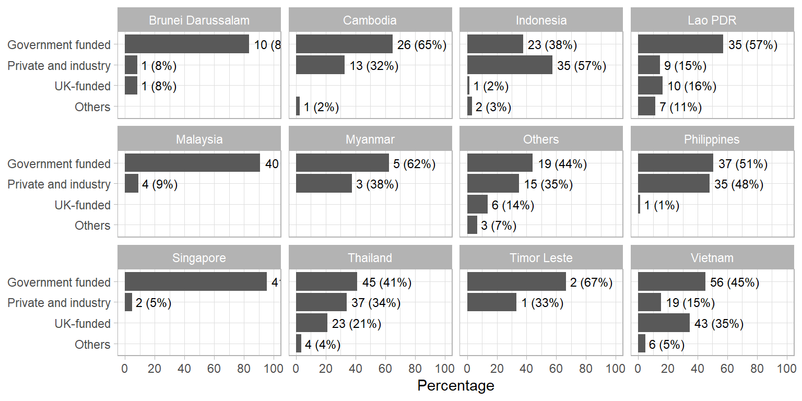
Comparison by country
Countries with less than 20 respondents (Brunei, Myanmar, Timor Leste) are grouped into “Others”.
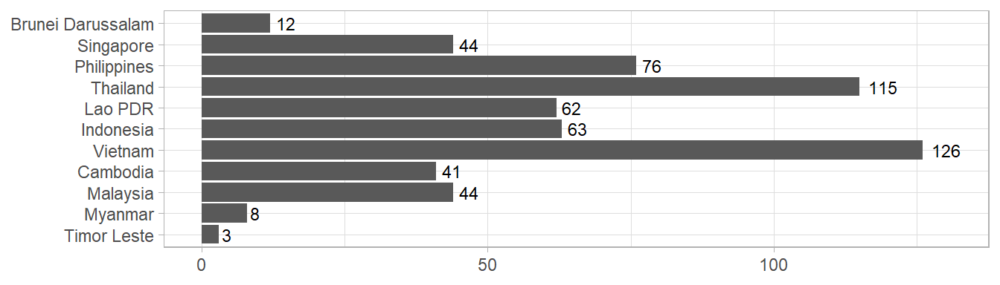
Overall, participants in Vietnam reported the most positive experiences with research culture, with many selecting “somewhat agree” to “strongly agree” across most questions. The statement “I am satisfied with the way research performance is assessed my organization e.g., academic publications, or obtaining a research grant” received the lowest overall agreement. Around half of respondents from Indonesia, Malaysia, Singapore, Brunei, Myanmar, and Timor-Leste disagreed or were neutral on this point.
| Characteristic | Cambodia N = 411 |
Indonesia N = 631 |
Lao PDR N = 621 |
Malaysia N = 441 |
Philippines N = 761 |
Singapore N = 441 |
Thailand N = 1151 |
Vietnam N = 1261 |
Others N = 231 |
|---|---|---|---|---|---|---|---|---|---|
| q9_1_int | 4 (4, 5) | 4 (3, 5) | 4 (4, 5) | 4 (3, 5) | 4 (4, 5) | 4 (3, 4) | 4 (4, 5) | 5 (4, 5) | 4 (2, 5) |
| q9_2_int | 4 (3, 5) | 4 (3, 5) | 4 (4, 5) | 4 (2, 4) | 4 (3, 5) | 4 (3, 4) | 4 (3, 5) | 5 (4, 5) | 3 (2, 5) |
| q9_3_int | 4 (4, 5) | 3 (2, 4) | 4 (4, 5) | 2 (2, 3) | 4 (2, 4) | 3 (2, 5) | 4 (3, 5) | 4 (3, 5) | 3 (2, 4) |
| q9_4_int | 4 (4, 5) | 3 (2, 4) | 4 (3, 5) | 3 (2, 4) | 4 (2, 4) | 3 (2, 4) | 4 (3, 5) | 5 (4, 5) | 3 (1, 4) |
| q9_5_int | 4 (4, 5) | 4 (3, 5) | 5 (4, 5) | 4 (2, 5) | 4 (4, 5) | 4 (2, 4) | 4 (4, 5) | 5 (4, 5) | 4 (3, 5) |
| 1 Median (Q1, Q3) | |||||||||
I think research culture is evolving for the better
The most common responses across the region were “Somewhat agree” to “Strongly agree”. However, respondents from Indonesia, Malaysia, Singapore, Brunei, Myanmar, and Timor-Leste showed a higher proportion of neutral to negative responses.
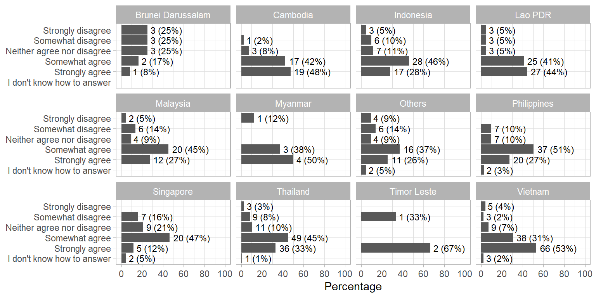
There is equity in decision-making and giving credit for research within my organisation
Overall, most countries leaned towards somewhat or strongly agree. However, 27% of respondents in Malaysia somewhat disagreed, and 27% in Indonesia gave neutral responses. The responses from Brunei, Myanmar, and Timor-Leste were quite diverse.
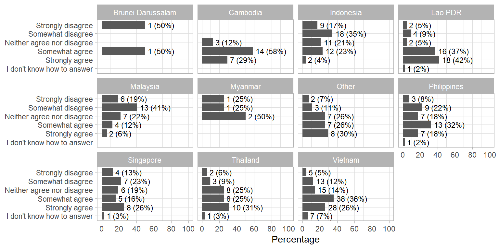
International research funders and/or foreign researchers dominate the research priorities of my country
There are two distinct groups: In Cambodia, Lao PDR, Thailand, and Vietnam, the majority of respondents (>50%) agreed with the statement. In contrast, respondents from Indonesia, Malaysia, the Philippines, Singapore, Brunei, Myanmar, and Timor-Leste mostly responded with neutral or disagreement.
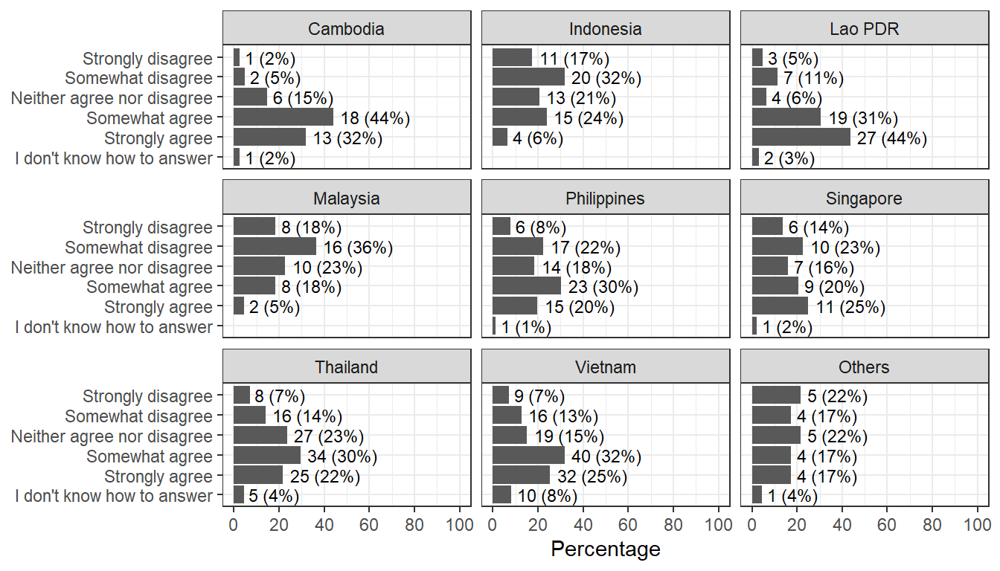
I am satisfied with the way research performance is assessed my organization e.g., academic publications, or obtaining a research grant
The same pattern appeared as in the previous question. In Cambodia, Lao PDR, Thailand, and Vietnam, most respondents (>50%) agreed with the statement. Meanwhile, those from Indonesia, Malaysia, the Philippines, Singapore, Brunei, Myanmar, and Timor-Leste mostly gave neutral or disagree responses.
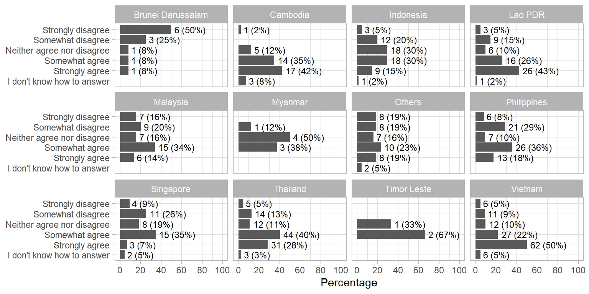
At my organization, there is collaboration rather than competition between researchers
The majority of respondents agreed in all countries, though the percentage of agreement was lower (ranging from 50-60%) in Malaysia, Singapore, Brunei, Myanmar, and Timor-Leste.
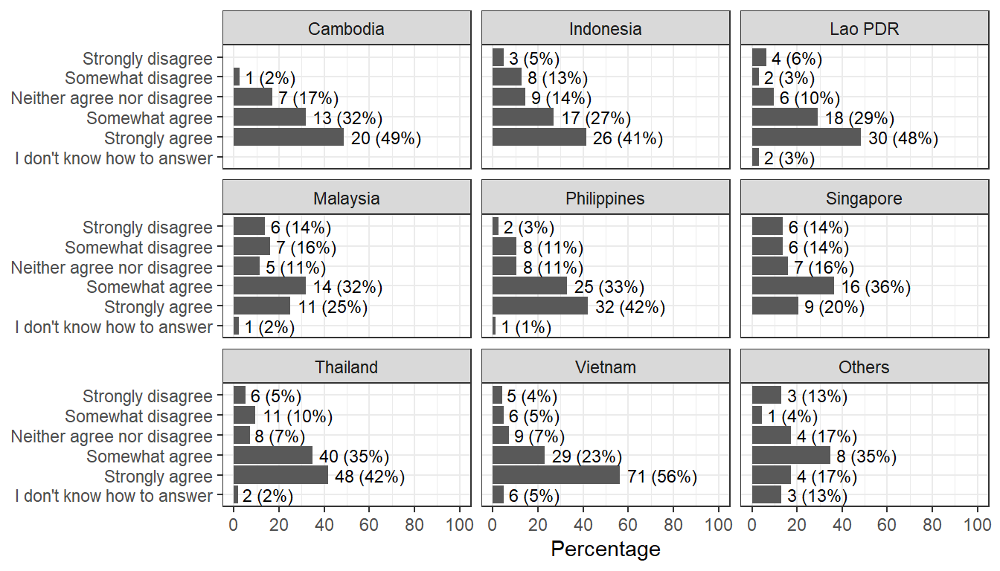
Do you think career progression (for instance, to senior positions) is harder for certain groups of researchers, e.g., women, early career researchers?
The majority of respondents in all countries agreed with the statement.
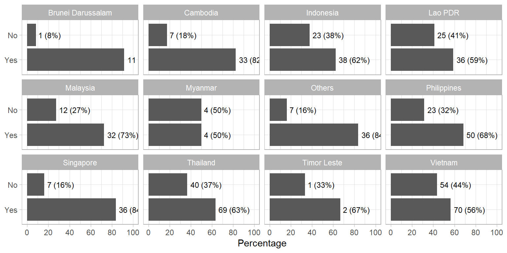
Non-PhD holders and early-career researchers were most commonly identified across all countries, followed by women, ethnic minorities, and people with disabilities.
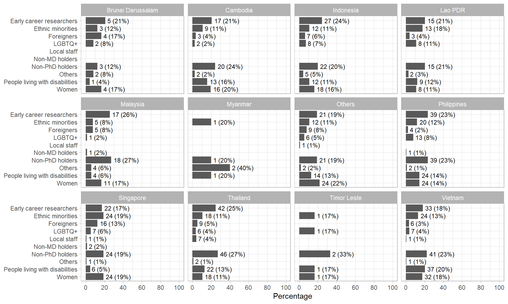
Comparison by gender
“Non-binary/third gender”, “Prefer not to say” and “Bayot” are grouped into “Others”.
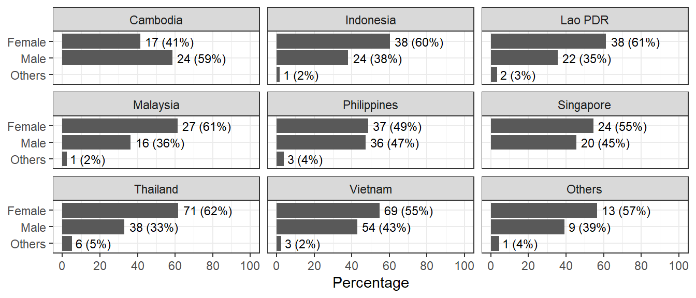
Overall, respondents identifying as “Others” gender reported less positive experiences with research culture. This was especially evident in responses to “I am satisfied with the way research performance is assessed my organization e.g., academic publications, or obtaining a research grant” and “At my organization, there is collaboration rather than competition between researchers”.
| Characteristic | Female N = 3341 |
Male N = 2431 |
Others N = 171 |
|---|---|---|---|
| q9_1_int | 4 (4, 5) | 4 (4, 5) | 4 (2, 4) |
| q9_2_int | 4 (3, 5) | 4 (4, 5) | 4 (3, 4) |
| q9_3_int | 4 (2, 4) | 4 (2, 5) | 5 (2, 5) |
| q9_4_int | 4 (3, 5) | 4 (3, 5) | 3 (1, 4) |
| q9_5_int | 4 (4, 5) | 4 (4, 5) | 3 (2, 5) |
| 1 Median (Q1, Q3) | |||
I think research culture is evolving for the better
Nearly 80% of both female and male respondents agreed with the statement. In contrast, respondents identifying as “Others” gender were split - about half agreed, half disagreed.
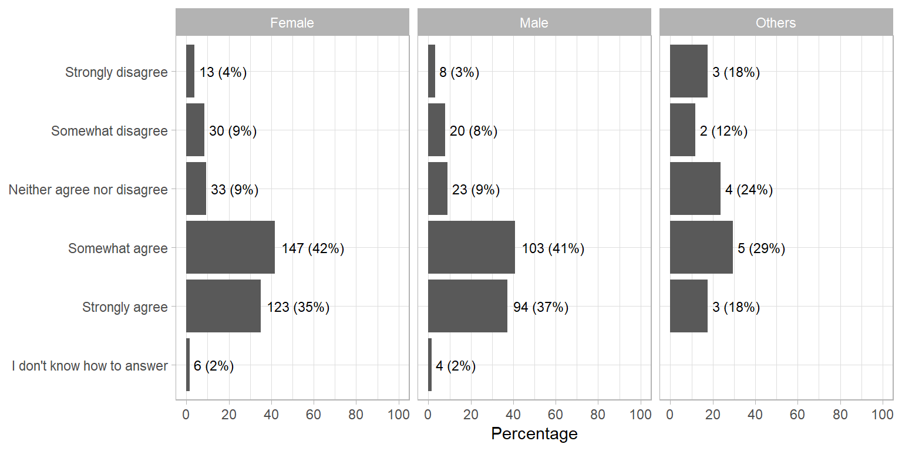
There is equity in decision-making and giving credit for research within my organisation
A similar pattern was observed: female and male respondents showed clear agreement, while those identifying as “Other” gender were more divided in their responses.
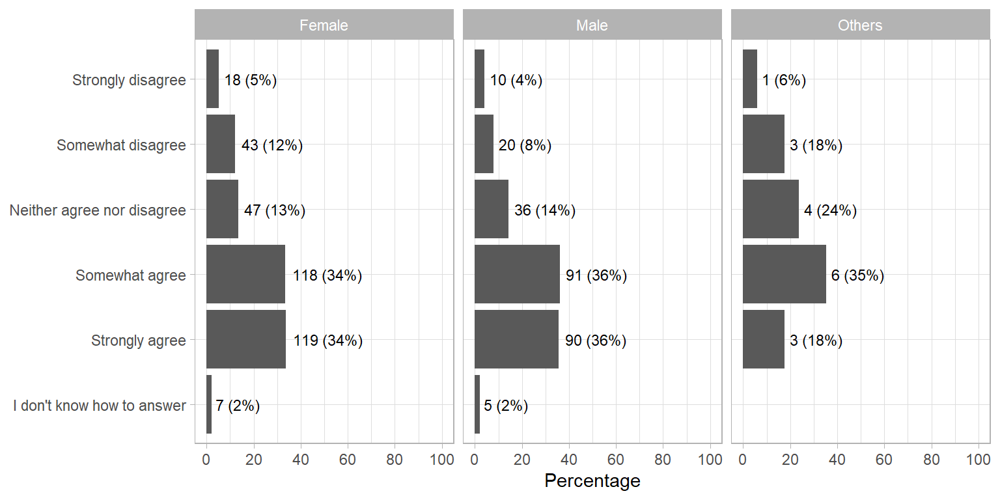
International research funders and/or foreign researchers dominate the research priorities of my country
Responses from female and male participants were diverse, showing no clear pattern. However, 47% of respondents identifying as “Other” gender strongly agreed that international funders or researchers dominate their country’s research priorities.
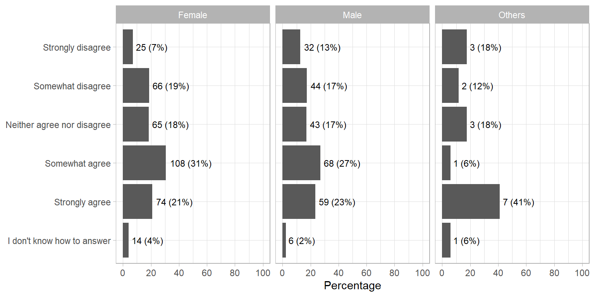
I am satisfied with the way research performance is assessed my organization e.g., academic publications, or obtaining a research grant
The majority of both female and male respondents agreed, with males showing stronger agreement than females. In contrast, respondents identifying as “Other” gender were less likely to agree.
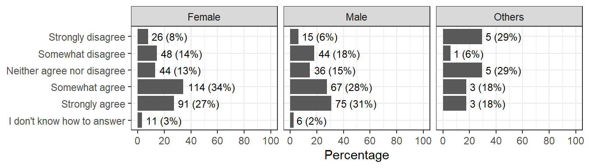
At my organization, there is collaboration rather than competition between researchers
Agreement was high among both female and male respondents. However, those identifying as “Other” gender showed noticeably lower levels of agreement.
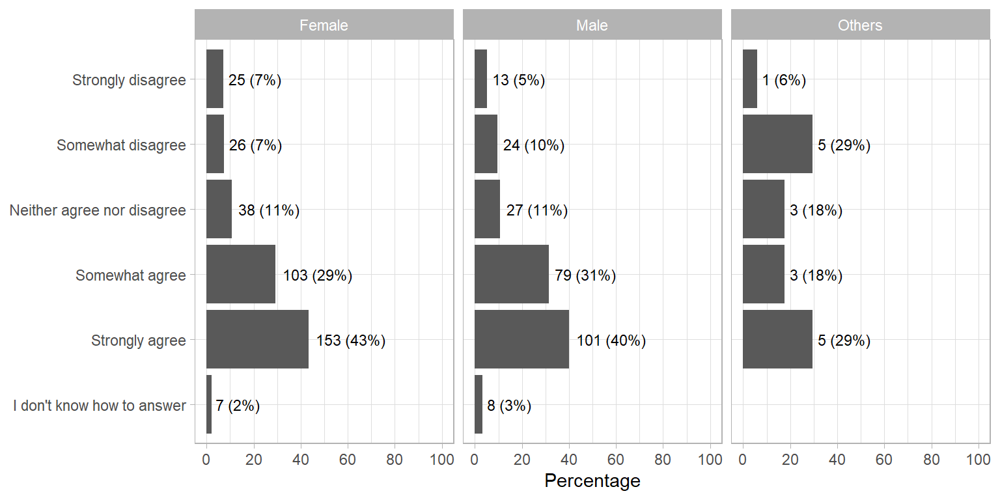
Do you think career progression (for instance, to senior positions) is harder for certain groups of researchers, e.g., women, early career researchers?
Overall respondents agreed with the statement. Agreement was highest among those identifying as “Other” gender (76%), followed by female (70%) and male (61%) respondents.
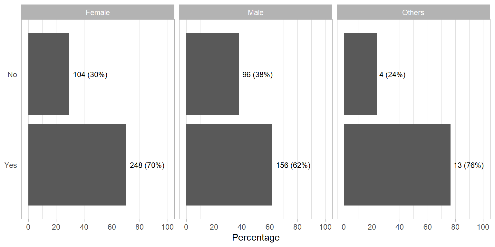
Across all genders, non-PhD holders and early-career researchers were most commonly identified as facing career progression challenges, followed by women, ethnic minorities, and people with disabilities. Some bias was observed: women were more likely to identify themselves (19%) rather than LGBTQ+ (4%) as disadvantaged, while respondents identifying as “Other” gender were more likely to select themselves (15%) over women (6%).
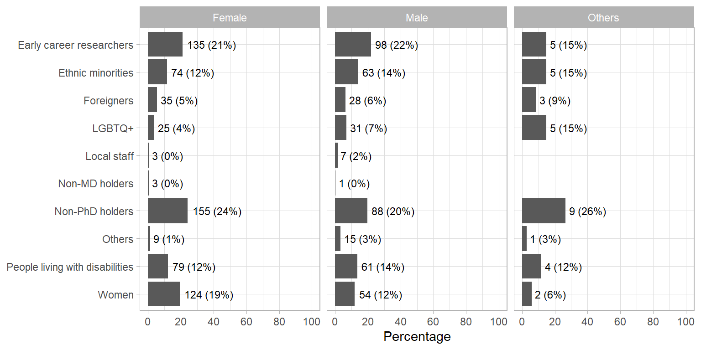
Comparison by career stage
| Position | Career stage |
|---|---|
|
Early-career |
|
Senior |
|
Support staff |
Early-career researchers made up around 40–50% of respondents across most countries, with a higher proportion in Singapore (75%) and a lower one in Malaysia (18%).
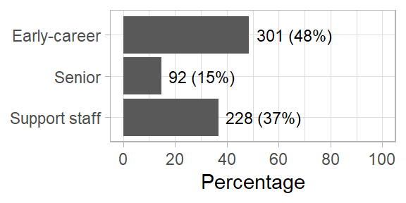
Overall, senior researchers reported more positive experiences with research culture and were less likely to believe that international funders or foreign researchers dominate national research priorities. In contrast, more early-career researchers and support staff felt that such external actors could dominate.
| Characteristic | Early-career N = 2921 |
Senior N = 851 |
Support staff N = 2171 |
|---|---|---|---|
| q9_1_int | 4 (3, 5) | 5 (4, 5) | 4 (4, 5) |
| q9_2_int | 4 (3, 5) | 4 (4, 5) | 4 (3, 5) |
| q9_3_int | 4 (3, 5) | 3 (2, 4) | 4 (2, 5) |
| q9_4_int | 4 (2, 5) | 4 (2, 5) | 4 (3, 5) |
| q9_5_int | 4 (4, 5) | 4 (3, 5) | 4 (3, 5) |
| 1 Median (Q1, Q3) | |||
I think research culture is evolving for the better
Senior researchers were confident that research culture is improving, with 54% strongly agreeing. In contrast, only 26% of early-career researchers felt the same.
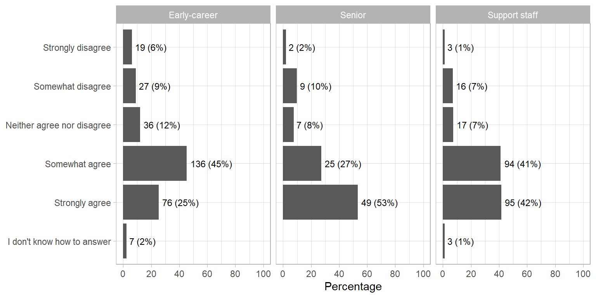
There is equity in decision-making and giving credit for research within my organisation
The majority of respondents agreed with this statement across all career stages.
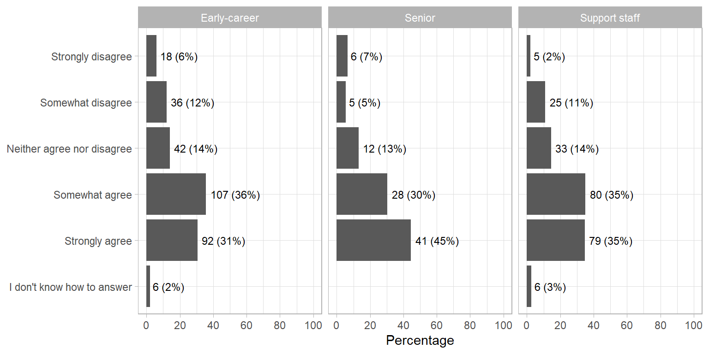
International research funders and/or foreign researchers dominate the research priorities of my country
Senior researchers were less concerned about external influence on national research priorities (44% disagreed), while early-career researchers and support staff were more likely to perceive dominance by international funders or foreign researchers.
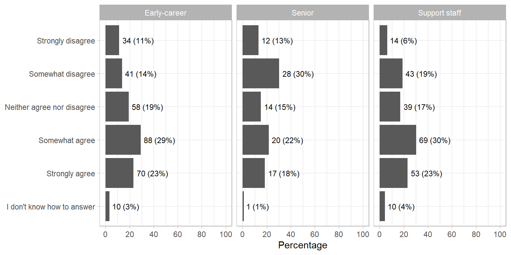
I am satisfied with the way research performance is assessed my organization e.g., academic publications, or obtaining a research grant
Across all career stages, most respondents either agreed or felt neutral about this statement.
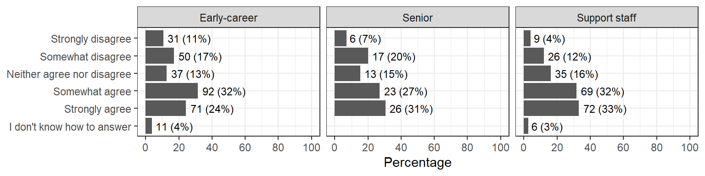
At my organization, there is collaboration rather than competition between researchers
Support staff showed the strongest agreement with this statement (46% strongly agree), followed by early-career researchers (41%) and senior researchers (34%).

Do you think career progression (for instance, to senior positions) is harder for certain groups of researchers, e.g., women, early career researchers?
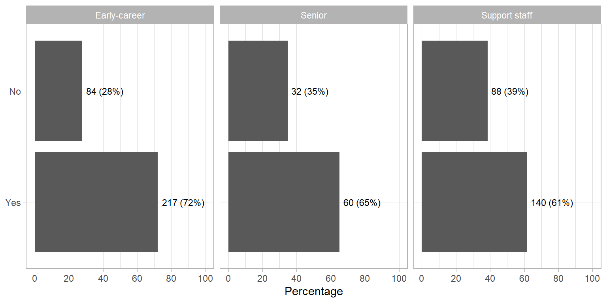
There could be some bias, as early-career and support staff often selected their own group as disadvantaged. However, senior respondents also identified non-PhD holders (22%), early-career researchers (17%), and women (17%) as facing the most difficulty in career progression.
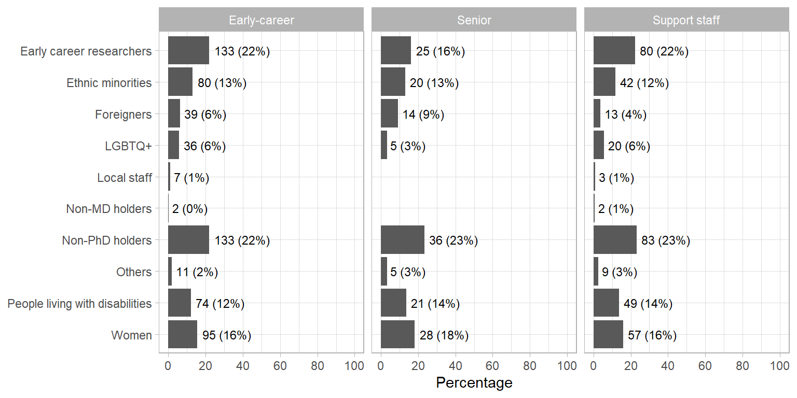
Comparison by scientific discipline
Overall, respondents in basic science fields (STEM and social sciences) and psychology reported less positive experiences with research culture, particularly regarding research performance assessment and internal collaboration. They were also less likely to believe that international funders or foreign researchers dominate national research priorities. In contrast, respondents in biomedicine, microbiology, and public/global health expressed greater concern about external influence on national research agendas.
| Characteristic | Biomedicine, medicine, nursing, clinical N = 1811 |
Microbiology, virology, parasitology N = 1011 |
Psychology, behavioural science N = 391 |
Public health, health policy, health systems, global health N = 2571 |
Social sciences, humanities N = 1241 |
STEM (science, technology, engineering, maths) N = 621 |
|---|---|---|---|---|---|---|
| q9_1_int | 4 (4, 5) | 4 (4, 5) | 4 (3, 5) | 4 (4, 5) | 4 (4, 5) | 4 (4, 5) |
| q9_2_int | 4 (3, 5) | 4 (4, 5) | 4 (3, 5) | 4 (3, 5) | 4 (3, 5) | 4 (3, 5) |
| q9_3_int | 4 (2, 4) | 4 (3, 5) | 3 (2, 4) | 4 (3, 5) | 3 (2, 4) | 3 (2, 4) |
| q9_4_int | 4 (3, 5) | 4 (4, 5) | 4 (3, 4) | 4 (3, 5) | 3 (2, 4) | 4 (2, 5) |
| q9_5_int | 4 (4, 5) | 5 (4, 5) | 4 (3, 5) | 4 (4, 5) | 4 (3, 5) | 4 (3, 5) |
| 1 Median (Q1, Q3) | ||||||
I think research culture is evolving for the better
High levels of agreement were observed across all disciplines. Neutral responses were slightly higher in respondents working in psychology, behavioural science (18%)
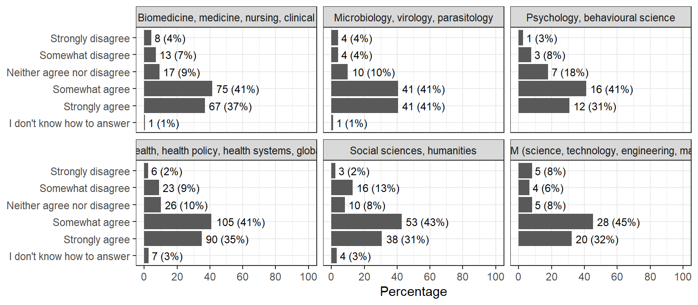
There is equity in decision-making and giving credit for research within my organisation
High levels of agreement were observed across all disciplines. Again, neutral responses were more common in psychology, behavioural science.
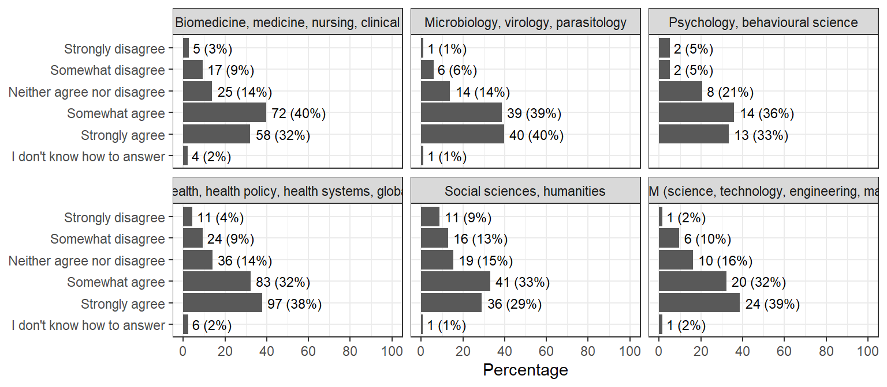
International research funders and/or foreign researchers dominate the research priorities of my country
Around 50% of respondents in biomedicine, microbiology, and public health agreed with the statement. In contrast, those in psychology, social science, and STEM were more likely to respond with disagreement or neutrality.
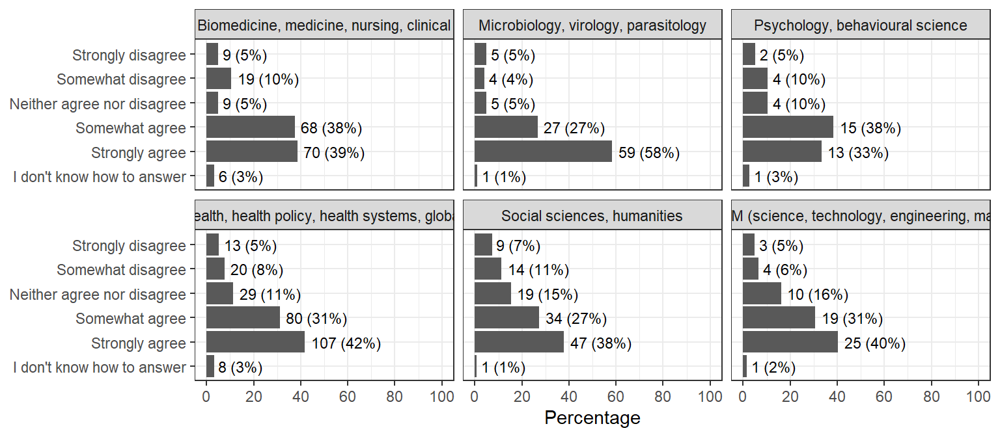
I am satisfied with the way research performance is assessed my organization e.g., academic publications, or obtaining a research grant
Respondents in biomedicine, microbiology, psychology, and public health showed higher levels of agreement. In contrast, those in social science and STEM were less likely to agree.
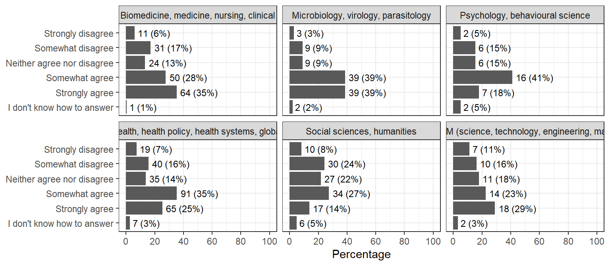
At my organization, there is collaboration rather than competition between researchers
Overall, most respondents agreed with the statement, though agreement was slightly lower among those in social science.
Do you think career progression (for instance, to senior positions) is harder for certain groups of researchers, e.g., women, early career researchers?
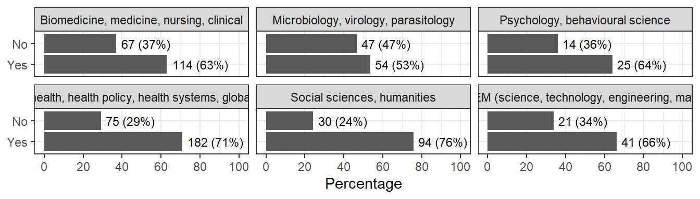
Non-PhD holders and early-career researchers were consistently identified as vulnerable groups across all disciplines. In microbiology, psychology, and social science, women were most commonly seen as amongst the most disadvantaged group.
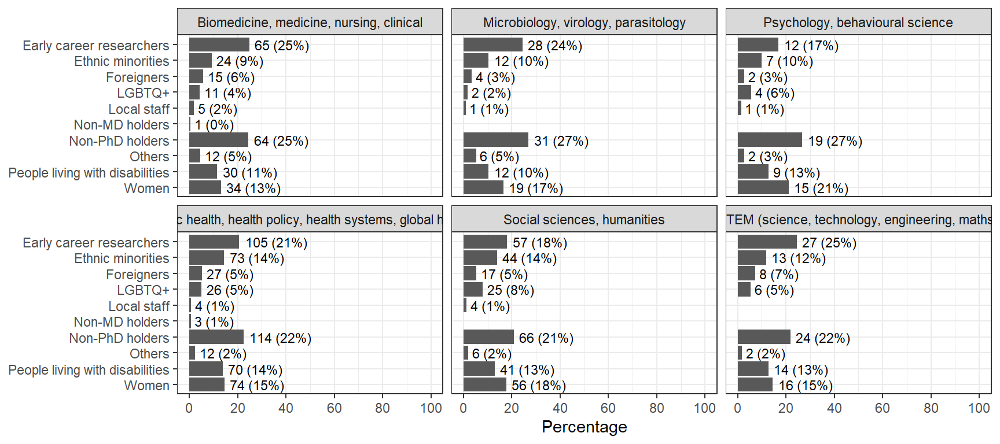
Comparison by funding source (with a focus on UK-funded)
UK-funded institutions in this survey are based in Lao PDR, Thailand, and Vietnam. All comparisons are made within each country, we compare UK-funded participants to their counterparts in other sectors.
| Characteristic | Cambodia N = 411 |
Indonesia N = 631 |
Lao PDR N = 621 |
Malaysia N = 441 |
Philippines N = 761 |
Singapore N = 441 |
Thailand N = 1151 |
Vietnam N = 1261 |
Others N = 231 |
|---|---|---|---|---|---|---|---|---|---|
| q5_category | |||||||||
| Government funded | 26 (63%) | 25 (40%) | 36 (58%) | 40 (91%) | 38 (50%) | 42 (95%) | 47 (41%) | 57 (45%) | 17 (74%) |
| Private and industry | 13 (32%) | 35 (56%) | 9 (15%) | 4 (9.1%) | 37 (49%) | 2 (4.5%) | 39 (34%) | 20 (16%) | 5 (22%) |
| UK-funded | 0 (0%) | 1 (1.6%) | 10 (16%) | 0 (0%) | 1 (1.3%) | 0 (0%) | 24 (21%) | 43 (34%) | 1 (4.3%) |
| Others | 2 (4.9%) | 2 (3.2%) | 7 (11%) | 0 (0%) | 0 (0%) | 0 (0%) | 5 (4.3%) | 6 (4.8%) | 0 (0%) |
| 1 n (%) | |||||||||
Overall, participants at UK-funded institutions reported a more positive research culture than those in other sectors. In response to the statement “International research funders and/or foreign researchers dominate the research priorities of my country” (Q9_3), UK-funded staff in Lao PDR were less likely to agree, while most UK-funded staff in Thailand and Vietnam agreed, the percentage are similar to those in the government-funded sector.
| Characteristic |
Lao PDR
|
Thailand
|
Vietnam
|
||||||
|---|---|---|---|---|---|---|---|---|---|
| Government funded N = 361 |
Private and industry N = 91 |
UK-funded N = 101 |
Government funded N = 471 |
Private and industry N = 391 |
UK-funded N = 241 |
Government funded N = 571 |
Private and industry N = 201 |
UK-funded N = 431 |
|
| q9_1_int | 5 (4, 5) | 4 (4, 5) | 4 (2, 5) | 4 (3, 5) | 4 (4, 5) | 4 (4, 5) | 5 (4, 5) | 4 (4, 5) | 5 (4, 5) |
| q9_2_int | 4 (4, 5) | 4 (3, 5) | 5 (3, 5) | 4 (3, 5) | 4 (3, 5) | 4 (4, 5) | 5 (4, 5) | 5 (4, 5) | 5 (4, 5) |
| q9_3_int | 4 (4, 5) | 5 (4, 5) | 4 (2, 5) | 4 (2, 5) | 4 (3, 5) | 4 (3, 5) | 4 (3, 5) | 4 (3, 5) | 4 (3, 5) |
| q9_4_int | 4 (4, 5) | 3 (2, 5) | 4 (3, 5) | 4 (2, 4) | 4 (3, 5) | 4 (4, 5) | 5 (4, 5) | 4 (4, 5) | 5 (4, 5) |
| q9_5_int | 5 (4, 5) | 4 (3, 5) | 5 (4, 5) | 4 (2, 5) | 4 (4, 5) | 4 (4, 5) | 5 (4, 5) | 5 (4, 5) | 5 (4, 5) |
| 1 Median (Q1, Q3) | |||||||||
I think research culture is evolving for the better
Most respondents agreed, with little variation across funding sources.
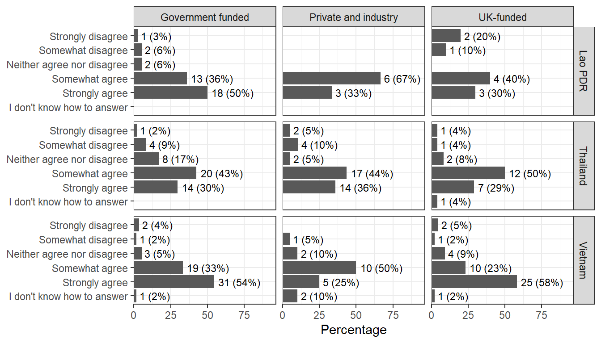
There is equity in decision-making and giving credit for research within my organisation
Most respondents agreed, with little variation across funding sources.
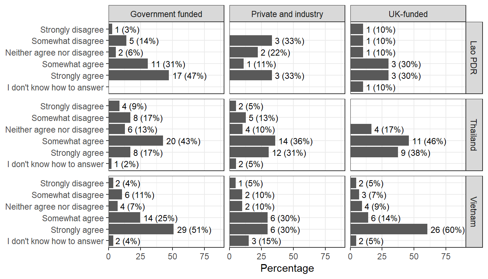
International research funders and/or foreign researchers dominate the research priorities of my country
In Lao PDR, UK-funded staff were less likely to agree. In contrast, most UK-funded staff in Thailand and Vietnam agreed, with levels comparable to those in the government-funded sector. The private and industry sector were quite similar to government-funded.
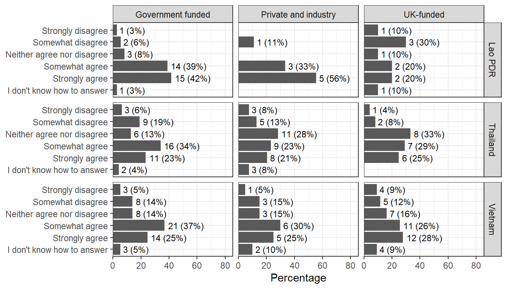
I am satisfied with the way research performance is assessed my organization e.g., academic publications, or obtaining a research grant
In Lao PDR, UK-funded staff were less satisfied than those in the government sector but more satisfied than those in the private and industry sectors. In Thailand and Vietnam, UK-funded staff showed higher agreement than both government and private/industry counterparts.
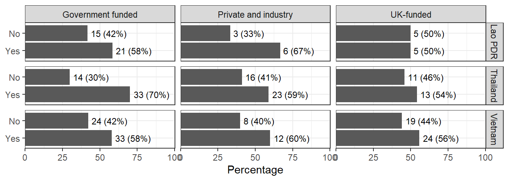
At my organization, there is collaboration rather than competition between researchers
Respondents in the private and industry sectors reported the lowest levels of internal collaboration. UK-funded staff in Lao PDR and Thailand showed higher agreement, while in Vietnam, their responses were similar to those in the government-funded sector.
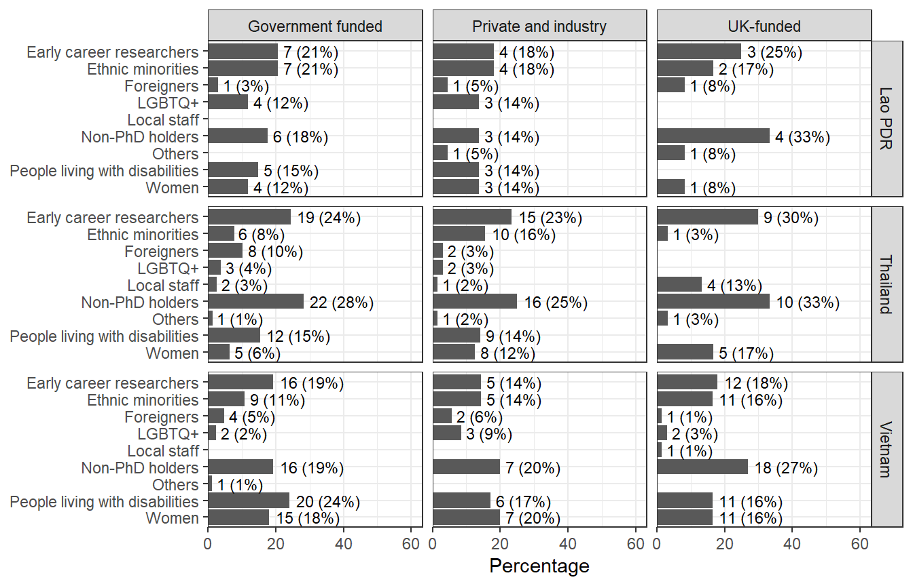
Do you think career progression (for instance, to senior positions) is harder for certain groups of researchers, e.g., women, early career researchers?
Across all sectors, most participants agreed that some groups of researchers face greater barriers to career progression.
Across all sectors, participants agreed that non-PhD holders and early career researchers face more challenges in career progression. At UK-funded institutions, more respondents in Thailand (13%) and Vietnam (1%) reported that local staff are harder to progress, which is higher than in government or private sectors (2-3% in Thailand, 0% in Vietnam).